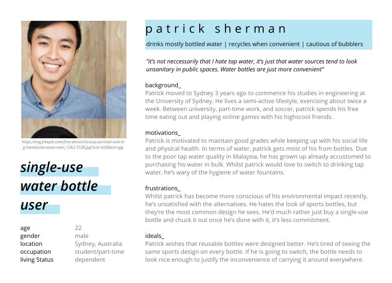
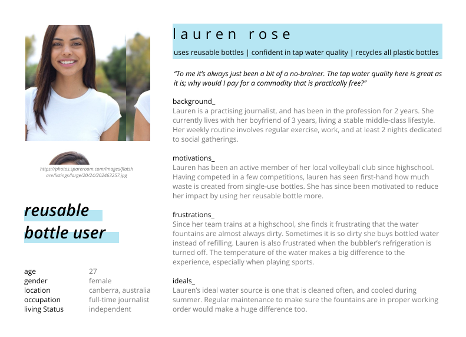

Overview
This project aims to create a digital and interactive solution that encourages people in Australia to reduce the purchases of single-use plastic water bottles and supports sustainable communities in everyday lives. The design focuses on behavioural patterns and the psychology behind users' decision-making processes. The Thirsty bottle encourages the use of reusable water bottles. It is easy to carry, purifies and keeps the water cold and syncs with the Thirsty app. The app motivates users to maintain their sustainable and healthy life styles to eventually reducing the overall plastic bottles purchased.
Workflow
Research
Literature Research
In 2015 Australia, approximately 5.7 million people consumed bottled water across any 7 day period ("Bottled water consumption booming", 2020), and the Single-use PET water bottles are only recycled 36% of the time in Australia ("Water bottle refill - University of Wollongong – UOW", 2020). With the low recycling rate, it is simply not sustainable if we continue to buy, consume and dispose of plastic water bottles in the manner and at the rate that we currently are.
To reduce the overall amount of bottled water people consumed in general, we focused our research on consumers' water drinking habits and why they choose bottled water over tap water. The taste, odor, color, temperature and quality of tap water all have influences on people’s drinking water choices (Delpla et all., 2020; Levallois, Grondin, & Gingras, 1999). Self-image is also a factor as to why people consume bottled water, particularly its trendiness and the image consumers wish to portray of themselves (Ballantine, Ozanne & Bayfield, 2019; Etale, Jobin & Siegrist, 2018). Another factor that contributes to the consumption of bottled water is the convenience and accessibility of water sources. It is easy to find bottled water in almost any store so people still consume bottled water when they are out and about even if they drink tap water at home (Etale, Jobin & Siegrist, 2018).
interview & Survey
We focused our interview and survey on people in Australia to gain insights on a local scale. Most of the findings overlapped with the literature and statics. However, no participants claimed that the brand identity influences their decisions on purchasing bottled water, but the fact that they have no suitable alternatives-the reusable bottles on the market do not fit into their lifestyles-even though it is realtively easy for them to find tap water sources. Participants who have reusable bottles, on the other hand, tend to forget to bring their bottles with them when they are out and about. We also discovered that the price of bottled water and people's environmental consciousness both affect the consumption of bottled water.
Empathise
With the literature and user research in mind, we completed two comprehensively analyzed user personas around reusable water bottle user and people who purchase bottled water on a regular basis.
 Competitive Analysis
We analyzed 4 digital products that have similar focuses to uncover design opportunities. Having tracking features seem to be a standard way of engaging with users especially for water intake. While most provide the function for users to discover clean drinking water sources, only one allows users to choose particular water that they prefer to drink. Additionally, none of these individual digital products support functions related to users reusable water bottles.
Ideate
The three of us came up with 1-2 ideas each ranging from bottled water that is made of environmentally friendly materials, special water dispensers that provide tap water with various of water flavors to smart water bottles with paired mobile app that support numerous functions to motivate people use reusable water bottles.
We presented our design ideas to our target users, discussed and iterated the ideas as a team that ‘the smart water bottles with paired mobile app’ would meet most of our user needs among all the ideas and match more comprehensively with the design opportunities. Additionally, we integrated it with a support system to further promote the use of this product.

The Thirsty Bottle
This bottle focuses on making the traditional reusable bottle smarter & more convenient, with features like a collapsible body & tracking sensors that send data to a mobile app.
The bottle is lightweight, collapsible and made of sustainable materials. It has flexible thermal lining protection to ensure water stays cold, and the ability to self-cleaning to maintain and improve the sanitary level of drinking water.
Prototype
The Thirsty Bottle
The bottle page shows the status of your bottle including the remaining battery percentage, your bottle location, and a button to purify water in the bottle.

Analysis and Customization
Users’ personal goals and water intake processes are shown in the profile page. Here also demonstrates the plastic bottles saved and water consumption history in line graph with the option of showing weekly and monthly. Users can also set reminders for drinking water, refilling water, auto-cleaning water and bringing the bottle with them.

The Support Community
Users can form teams to compete and support team members and contribute to the environment as a team. They can also view other users’ progresses and chat with them to engage with the community.
Challenge
What are we trying to solve?
How might we encourage people to choose tap water over bottled water?